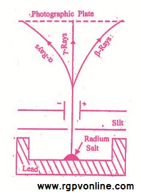

Q.7 : रेडियोऐक्टिविटी का सिद्धान्त समझाइए।
उत्तर - रेडियोऐक्टिविटी (Radioactivity)- "वे पदार्थ जो प्रकृति में स्वतः वेधी किरणें उत्सर्जित करते हैं, रेडियोऐक्टिव पदार्थ कहलाते हैं और पदार्थों का स्वतः वेधी किरणें उत्सर्जित करने का गुण डियोऐक्टिविटी कहलाता है।" रेडियोऐक्टिविटी शब्द का अर्थ विकिरण उत्सर्जन सक्रियता (ray emitting activity) से है। - रेडियोऐक्टिविटी, परमाणु नाभिक का गुण है। रेडियोऐक्टिव तत्वों के नाभिक अस्थायी होते हैं। इनमें स्वतः विघटन (spontaneous disintegration) का गुण पाया जाता है। अतः परमाणु नाभिक के स्वतः विघटन को रेडियोऐक्टिव विघटन (radioactive disintegration or decay) कहते हैं।
रेडियोऐक्टिव विघटन में परमाणु नाभिक, बेधी किरणें उत्सर्जित करते हैं। इन किरणों को रेडियोऐक्टिव किरणें कहते हैं ।
रेडियोऐक्टिविटी का सिद्धान्त (Theory of Radioactivity) - सन् 1902 में लार्ड रदरफोर्ड ने रेडियोऐक्टिव किरणों के गुणों का अध्ययन किया। उन्होंने लेड के एक चौकोर पात्र में रेडियोऐक्टिव पदार्थ का एक टुकड़ा रखा, तथा जब इससे निकलने वाली किरणों को चुम्बकीय क्षेत्र से गुजारा, तो उन्होंने पाया कि कुछ Photographic Plate किरणें ऋणावेशित प्लेट की ओर मुड़ जाती है, जिन्हें α-किरणें कहते हैं। कुछ धनावेशित प्लेट की ओर मुड़, जाती हैं, जिन्हें β -किरणें कहते हैं तथा कुछ सीधी चली जाती हैं, जिन्हें γ-किरणें कहते हैं।
रदरफोर्ड तथा सोडी ने बतलाया कि रेडियोऐक्टिव तत्वों के परमाणु अस्थायी होते हैं। इनसे α तथा β-कणों के निकलने के कारण ये विखण्डित होते रहते हैं जिससे नये परमाणुओं की उत्पत्ति होती है। इन नये परमाणुओं के गुण पहले वाले परमाणु के गुण से सर्वथा भिन्न होते हैं। ये नये परमाणु भी रेडियोऐक्टिव होते हैं। यह प्रक्रिया तब तक जारी रहती है जब तक कि यह एक रेडियोऐक्टिविटी विहीन एवं स्थायी परमाणु नही बन जाता हैं।

चित्र 7.1 रेडियोऐक्टिव किरणें